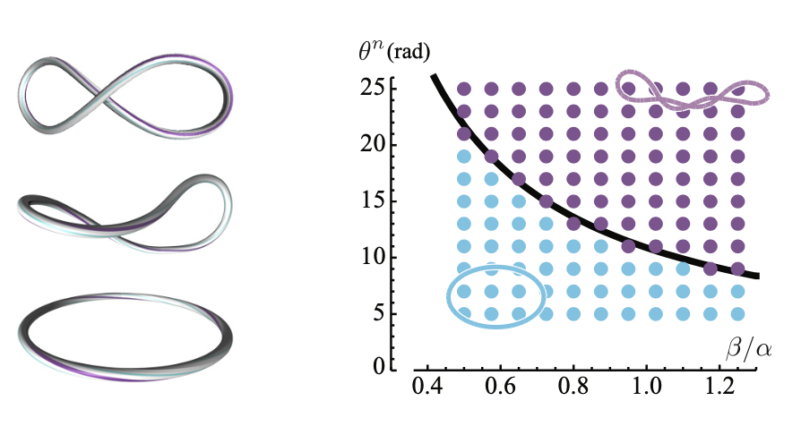
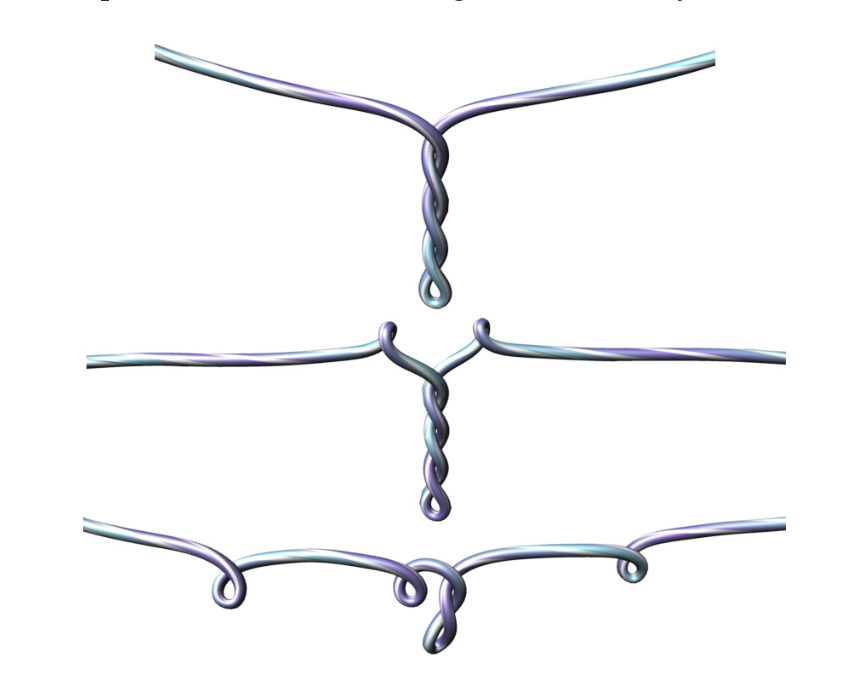

Discrete elastic Rod (DER)
Hangqi Cui - Nada Abdelwahab - Suneh Bhatia
What is a Discrete Elastic Rod?
- Kirchhoff rod
- Discrete polyline ( primals and duals)


Solve Dynamics!
Standard setup:
$$ \text{Energy} \rightarrow \text{Force} \rightarrow \text{Acceleration} \rightarrow \text{Position} $$
Three important assumptions
- Inextensible rod
- Ignore the elastic energy in this model
- Quasistatic Update
- Twist angle changes must synchronize on all the edges simultaneously and before the bending force take actions
- Isotropic rod
- Cross section of the rod is of a unit circle
Bishop Frame
Twist is independent from the curve
Tangent, normal and binormal.
- Tangent is always deterministic in the discrete curve.
- Set up a reference frame (normal)((0,0,1)) at the beginning of the curve.
- $ B = T \times N$
Bishop Frame
discrete elastic rods--- bergou ,SIGGRAPH 2008
https://www.youtube.com/watch?v=MBYBV8EAis0
Parallel Transport
Construct the remaining normals iteratively.
A roation matrix using axis and angle.
$ N^{i+1} = P^i * N^i $
discrete elastic rods--- bergou ,SIGGRAPH 2008
https://www.youtube.com/watch?v=MBYBV8EAis0
Material Frame
Simply rotate u and v in twisting angle $\theta$
discrete elastic rods--- bergou ,SIGGRAPH 2008
https://www.youtube.com/watch?v=MBYBV8EAis0
Curvature and Darboux vector
Surprisingly Many ways to approximate curvature, and receive difference results!
$\kappa = 2 \tan \frac{\theta}{2}$
Darboux vector - rotation vector of the curve with curvature $\kappa$
$\Omega = \kappa b =\frac{2 \mathbf{e}^{i-1} \times \mathbf{e}^i}{\left|\overline{\mathbf{e}}^{i-1}\right|\left|\overline{\mathbf{e}}^i\right|+\mathbf{e}^{i-1} \cdot \mathbf{e}^i}$
Dynamics 101
$$ F = dE \qquad E = \int F dx $$ $$ F = ma \rightarrow {\partial E\over \partial x}=M\ddot{x} $$
Energies and Forcies (continous case)
=======Energies and Forces (continuous case)
>>>>>>> 64f00ae76afc071cfc5528b62b0c73ad75de406c- Elastic Energy: 0
- Bending Energy : $$ {1\over2}\int \alpha \kappa^2 ds $$
- Twisting Energy: $$ {1\over2}\int \beta (\theta ^i)^2 ds $$
- $\alpha, \beta$: Material modulus
Energies and Forces (discrete case)
- Elastic Energy: 0
- Bending Energy : $$ E_{{bend }}(\Gamma)=\frac{1}{2} \sum_{i=1}^n \alpha\left(\frac{\kappa \mathbf{b}_i}{\bar{l}_i / 2}\right)^2 \frac{\bar{l}_i}{2}=\sum_{i=1}^n \frac{\alpha\left(\kappa \mathbf{b}_i\right)^2}{\bar{l}_i} $$
- Twisting Energy: $$ E_{{twist}}(\Gamma)=\sum_{i=1}^n \beta \frac{\left(\theta^i-\theta^{i-1}\right)^2}{\bar{l}_i}=\sum_{i=1}^n \frac{\beta m_i^2}{\bar{l}_i} $$
- Voronoi weight: $$ l_i = |e^{i-1}| +|e^i| $$
Energies and Forces (discrete case)
- Elastic Force: 0
- Bending Force : $$F_{{bend}} =-\frac{2 \alpha}{\bar{l}_j}\left(\nabla_i(\kappa \mathbf{b})_j\right)^T(\kappa \mathbf{b})_j$$
- Twisting Force: $$F_{{twist}} =\frac{\beta\left(\theta^n-\theta^0\right)}{\bar{L}} \nabla_i \psi_j$$
- Voronoi weight: $$ l_i = |e^{i-1}| +|e^i| $$
Symplectic Euler
Symplectic Euler, Forward Euler, Backward Euler
$$ a = {dv\over dt}, \qquad v = \int a dt $$ $$ v = {dx\over dt}, \qquad x = \int v dt $$ $$ F = ma \quad $$
Constraints
-
<<<<<<< HEAD
- Manifold Projection : Maintain the shape of the curve
- Remeber the curve is inextensible?
- Rigid body coupling
- Twist holonomy : Update twisting angles
- Another assumption: twist is updated simutaneously
- Manifold Projection: Maintain the shape of the curve
- Remember the curve is inextensible?
- Twist holonomy: Update twisting angles
- Another assumption: twist is updated simultaneously
discrete elastic rods--- bergou ,SIGGRAPH 2008
https://www.youtube.com/watch?v=MBYBV8EAis0
Experiments
Michell's buckling instability of an elastic ring with imposed internal twist θn. Left: above a critical value of θn, the planar, circular shape loses stability and buckles to a non-planar shape. Right: domain of stability of the circular shape with radius R = 1: simulations (dots) compared to theoretical threshold (black curve). Each dot corresponds to a simulation run with particular values of β and θn (α = 1 and n = 50 are fixed), initialized with a slightly perturbed circular shape; dots are colored in light blue when the amplitude of the perturbation decreases in time (stable) and in purple when it increases (unstable).
Experiments
Plectoneme formation: When the ends of a hanging elastic rod are twisted, it takes on structures known as plectonemes. The formation of plectonemes is governed by physical parameters, such as the twist rate, viscosity of the ambient fluid, and gravity.
Applications
Towards Realistic Hair Animation Using Discrete Elastic Rods Mila Grigorova Master Thesis
Applications
discrete elastic rods--- bergou ,SIGGRAPH 2008